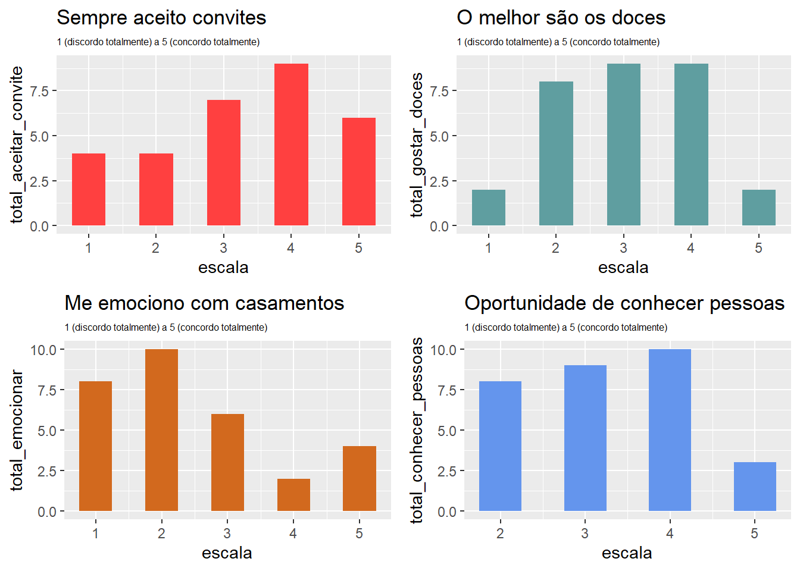
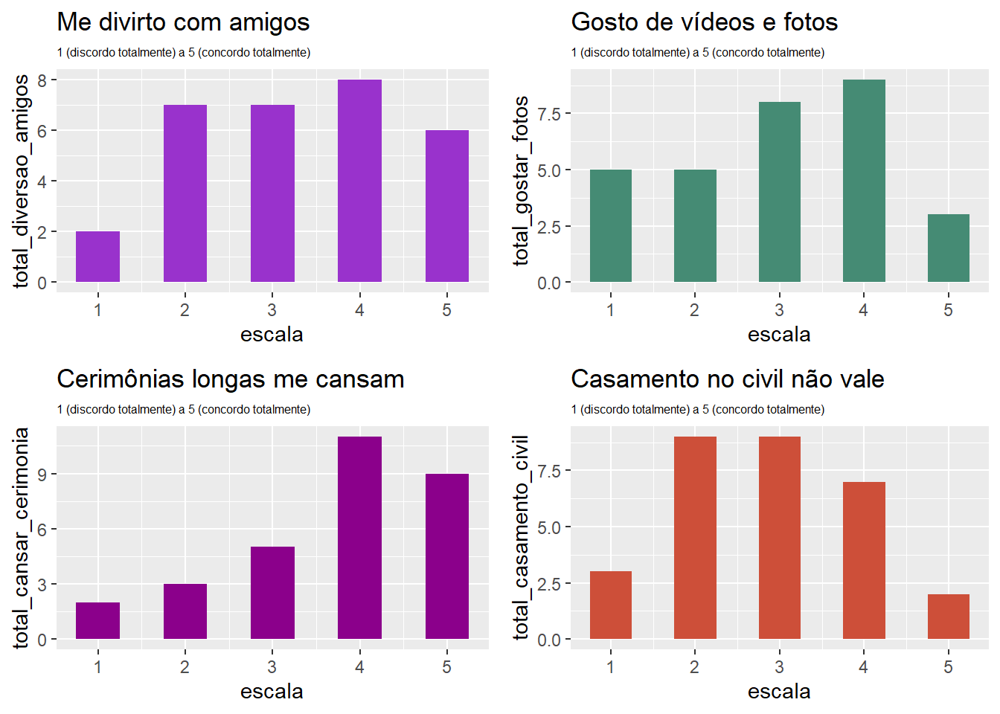
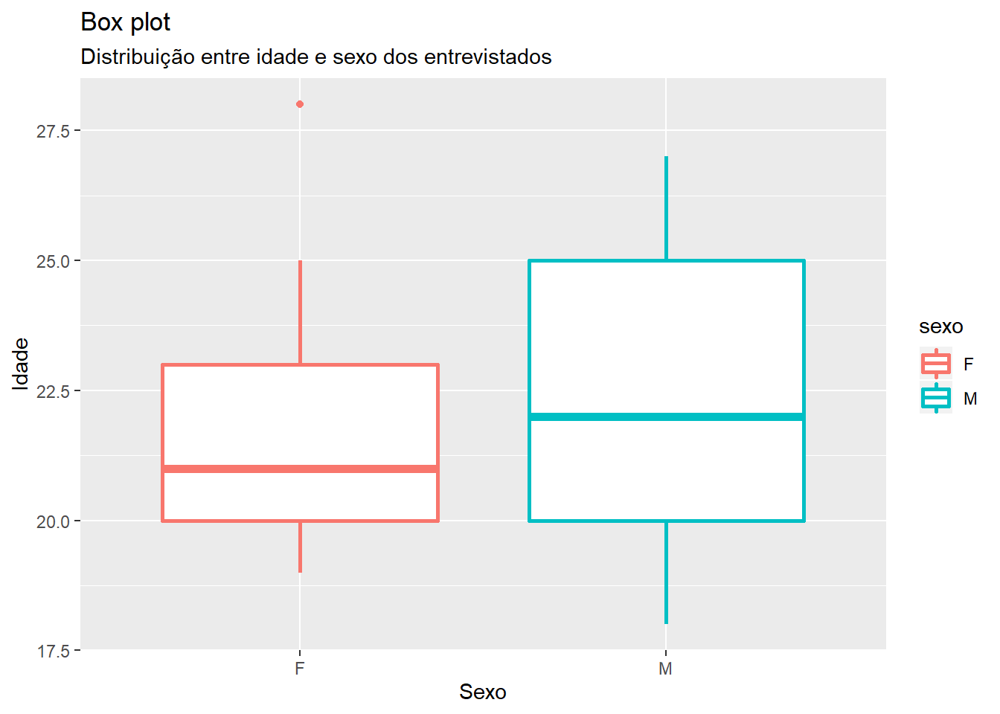
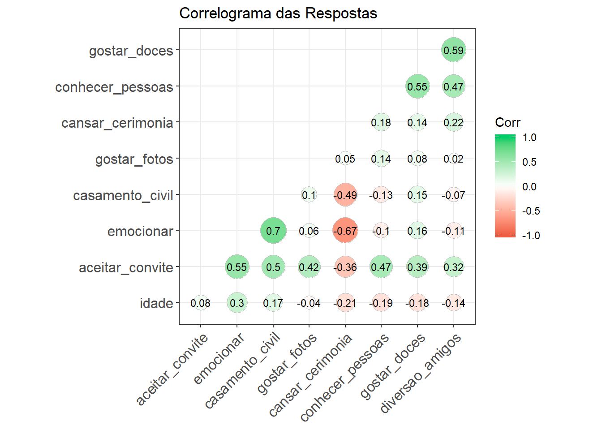

Este relatório tem o objetivo de apresentar uma série de explorações iniciais dos dados de entrevista sobre casamentos.
Carregamos a base de dados alvo, previamente tratada durante os passos explicados na fase de Data Preparation (preparação de dados).
## id aceitar_convite gostar_doces emocionar
## Min. : 1.00 Min. :1.00 Min. :1.000 Min. :1.000
## 1st Qu.: 8.25 1st Qu.:2.25 1st Qu.:2.000 1st Qu.:1.250
## Median :15.50 Median :3.50 Median :3.000 Median :2.000
## Mean :15.50 Mean :3.30 Mean :3.033 Mean :2.467
## 3rd Qu.:22.75 3rd Qu.:4.00 3rd Qu.:4.000 3rd Qu.:3.000
## Max. :30.00 Max. :5.00 Max. :5.000 Max. :5.000
## conhecer_pessoas diversao_amigos gostar_fotos cansar_cerimonia
## Min. :2.000 Min. :1.0 Min. :1 Min. :1.000
## 1st Qu.:2.250 1st Qu.:2.0 1st Qu.:2 1st Qu.:3.000
## Median :3.000 Median :3.0 Median :3 Median :4.000
## Mean :3.267 Mean :3.3 Mean :3 Mean :3.733
## 3rd Qu.:4.000 3rd Qu.:4.0 3rd Qu.:4 3rd Qu.:5.000
## Max. :5.000 Max. :5.0 Max. :5 Max. :5.000
## casamento_civil idade sexo
## Min. :1.000 Min. :18.00 Length:30
## 1st Qu.:2.000 1st Qu.:20.00 Class :character
## Median :3.000 Median :22.00 Mode :character
## Mean :2.867 Mean :22.23
## 3rd Qu.:4.000 3rd Qu.:24.50
## Max. :5.000 Max. :28.00Resultados das trinta entrevistas realizadas, pedindo-se para dar uma nota de 1 (discordo totalmente) a 5 (concordo totalmente).
Pode-se notar que não houve concentração clara de respondentes em alguma opção de pergunta.
ds_aceitar_convite <- target_data %>%
group_by(escala = aceitar_convite) %>%
summarize(total_aceitar_convite = n())
ds_gostar_doces <- target_data %>%
group_by(escala = gostar_doces) %>%
summarize(total_gostar_doces = n())
ds_emocionar <- target_data %>%
group_by(escala = emocionar) %>%
summarize(total_emocionar = n())
ds_conhecer_pessoas <- target_data %>%
group_by(escala = conhecer_pessoas) %>%
summarize(total_conhecer_pessoas = n())
ds_diversao_amigos <- target_data %>%
group_by(escala = diversao_amigos) %>%
summarize(total_diversao_amigos = n())
ds_gostar_fotos <- target_data %>%
group_by(escala = gostar_fotos) %>%
summarize(total_gostar_fotos = n())
ds_cansar_cerimonia <- target_data %>%
group_by(escala = cansar_cerimonia) %>%
summarize(total_cansar_cerimonia = n())
ds_casamento_civil <- target_data %>%
group_by(escala = casamento_civil) %>%
summarize(total_casamento_civil = n())
plot_aceitar_convite <- ggplot(ds_aceitar_convite,
aes(x = escala, y = total_aceitar_convite)) +
geom_bar(stat = "identity", width = .5, fill = "brown1") +
labs(title = "Sempre aceito convites",
subtitle = "1 (discordo totalmente) a 5 (concordo totalmente)") +
theme(plot.subtitle = element_text(size = 6))
plot_gostar_doces <- ggplot(ds_gostar_doces,
aes(x = escala, y = total_gostar_doces)) +
geom_bar(stat="identity", width = .5, fill = "cadetblue") +
labs(title = "O melhor são os doces",
subtitle = "1 (discordo totalmente) a 5 (concordo totalmente)") +
theme(plot.subtitle = element_text(size = 6))
plot_emocionar <- ggplot(ds_emocionar,
aes(x = escala, y = total_emocionar)) +
geom_bar(stat="identity", width = .5, fill = "chocolate") +
labs(title = "Me emociono com casamentos",
subtitle = "1 (discordo totalmente) a 5 (concordo totalmente)") +
theme(plot.subtitle = element_text(size = 6))
plot_conhecer_pessoas <- ggplot(ds_conhecer_pessoas,
aes(x = escala, y = total_conhecer_pessoas)) +
geom_bar(stat="identity", width = .5, fill = "cornflowerblue") +
labs(title = "Oportunidade de conhecer pessoas",
subtitle = "1 (discordo totalmente) a 5 (concordo totalmente)") +
theme(plot.subtitle = element_text(size = 6))
plot_diversao_amigos <- ggplot(ds_diversao_amigos,
aes(x = escala, y = total_diversao_amigos)) +
geom_bar(stat = "identity", width = .5, fill = "darkorchid") +
labs(title = "Me divirto com amigos",
subtitle = "1 (discordo totalmente) a 5 (concordo totalmente)") +
theme(plot.subtitle = element_text(size = 6))
plot_gostar_fotos <- ggplot(ds_gostar_fotos,
aes(x = escala, y = total_gostar_fotos)) +
geom_bar(stat="identity", width = .5, fill = "aquamarine4") +
labs(title = "Gosto de vídeos e fotos",
subtitle = "1 (discordo totalmente) a 5 (concordo totalmente)") +
theme(plot.subtitle = element_text(size = 6))
plot_cansar_cerimonia <- ggplot(ds_cansar_cerimonia,
aes(x = escala, y = total_cansar_cerimonia)) +
geom_bar(stat="identity", width = .5, fill = "darkmagenta") +
labs(title = "Cerimônias longas me cansam",
subtitle = "1 (discordo totalmente) a 5 (concordo totalmente)") +
theme(plot.subtitle = element_text(size = 6))
plot_casamento_civil <- ggplot(ds_casamento_civil,
aes(x = escala, y = total_casamento_civil)) +
geom_bar(stat="identity", width = .5, fill = "tomato3") +
labs(title = "Casamento no civil não vale",
subtitle = "1 (discordo totalmente) a 5 (concordo totalmente)") +
theme(plot.subtitle = element_text(size = 6))
ggarrange(plot_aceitar_convite,
plot_gostar_doces,
plot_emocionar,
plot_conhecer_pessoas,
ncol = 2,
nrow = 2)
ggarrange(plot_diversao_amigos,
plot_gostar_fotos,
plot_cansar_cerimonia,
plot_casamento_civil,
ncol = 2,
nrow = 2) 
O box plot abaixo mostra a relação de distribuição existente entre a idade e o sexo dos entrevistados.
ggplot(target_data, aes(sexo, idade,
color = sexo)) +
geom_boxplot(lwd = 1) +
labs(title = "Box plot",
subtitle = "Distribuição entre idade e sexo dos entrevistados",
x = "Sexo",
y = "Idade")
corr <- cor(target_data[, c(-1, -11)])
ggcorrplot(corr, hc.order = TRUE,
type = "lower",
lab = TRUE,
lab_size = 3,
method = "circle",
colors = c("tomato2", "white", "springgreen3"),
title = "Correlograma das Respostas",
ggtheme = theme_bw)